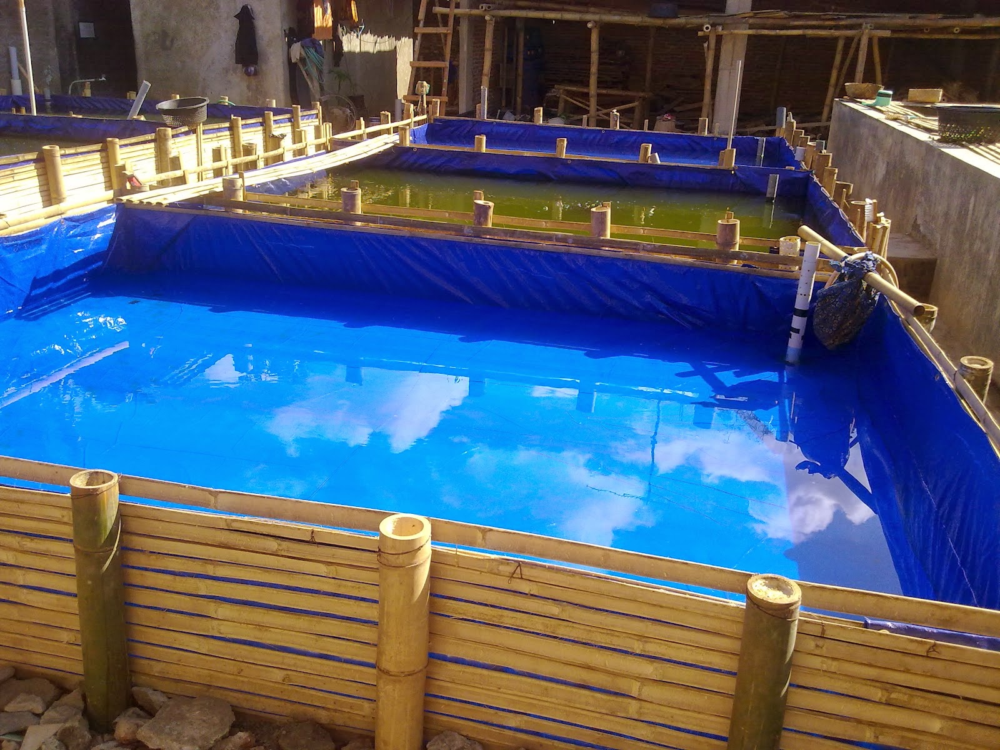

Dalam budaidaya ikan lele, kolam menjadi salah satu hal penting dalam membudidayakan ikan lele. Sering kali pembudidaya menyepelekan hal ini sehingga mereka mengalami kerugian dalam membudidayakan ikan lele.
Kolam lele yang baik :
kolam tanah adalah kolam pembesaran ikan lele yang berbentuk kubangan pada tanah yang di bentuk sedemikin rupa sehingga mampu menjadi tempat hidup yang baik untuk pembesaran ikan lele.
Kelebihan kolam tanah :
Kekurangan kolam tanah :
Kolam terpal yaitu jenis kolam yang menggunakan terpal sebagai bahan utamanya serta didukung oleh bahan lainnya. Kolam terpal mempunyai nilai ekonomis untuk budidaya lele. Cara pembuatannya pun relatif mudah. Oleh karena itu, teknologi ini termasuk tepat guna.
Kelebihan :
Kekurangan :
Jenis - jenis kolam terpal :
Kolam terpal di atas permukaan tanah adalah kolam yang dibuat di atas permukaan tanah tanpa menggali atau melubangi permukaan tanah.
Pada prinsipnya, kolam terpal di bawah tanah, mirip dengan kolam tanah. Hnya saja pada permukaaan nya dilapisi dengan tepal dengan tujuan agar tanah tidak longsor atau air habi terserap oleh tanah.
Kolam beton merupakan media budidaya ikan yang sangat disukai karena tahan lama dan perawatannya cukup mudah. Kolam ini dibuat dengan menggunakan campuran semen sebagai bahan pengeras dinding kolam. Kolam beton dapat bertahan hingga puluhan tahun apabila dirawat dengan benar.
Kelebihan kolam beton / semen :
Kekurangan kolam beton / semen :
NB:
Untuk kolam baru, sebaiknya di isi air dulu sampai penuh lalu diamkan selama 1 minggu setelah itu, buang air dan ganti dengan air yang baru. Hal ini bertujuan untuk menghilangkan zat – zat kimia yang berada di kolam.
Untuk kolam lama / bekas budidaya. Keringkan kolam dan diamkan selama 1 minggu. Setelah itu isi air kembali dan kolam pun siap digunakan. Hal ini bertujuan untuk membunuh siklus hidup bakteri dalam kolam, sehingga ikan baru tidak tertular penyakit dari budidaya sebelum nya.